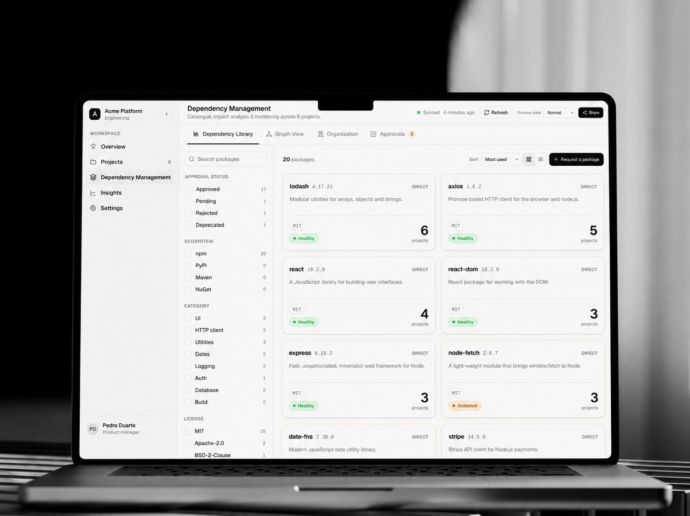
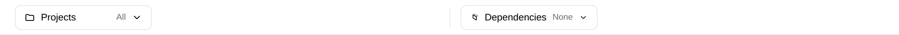
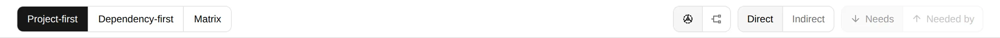
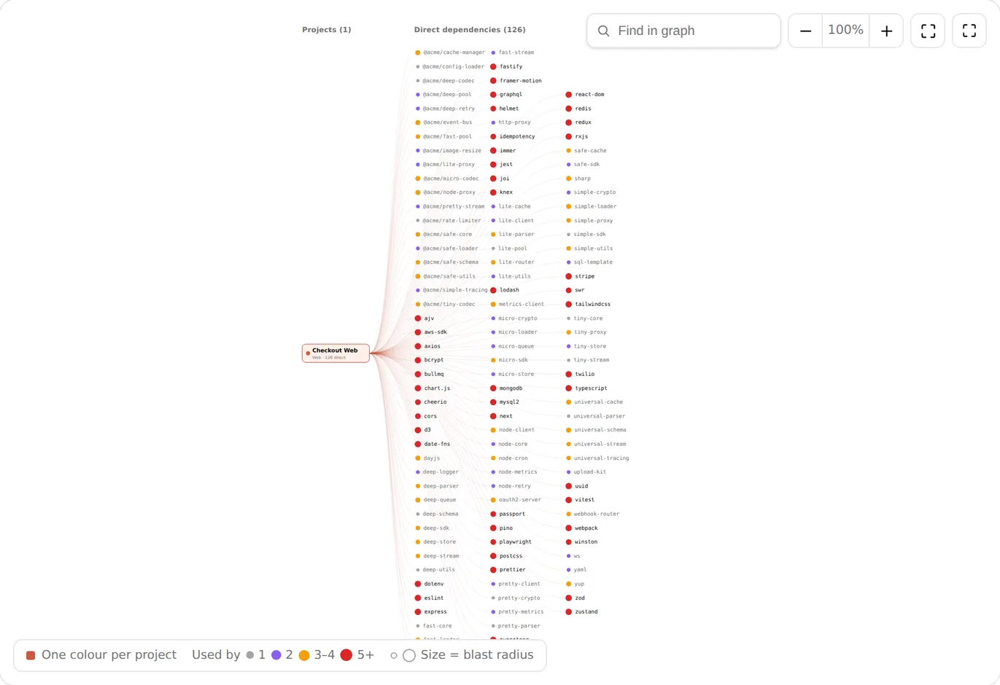
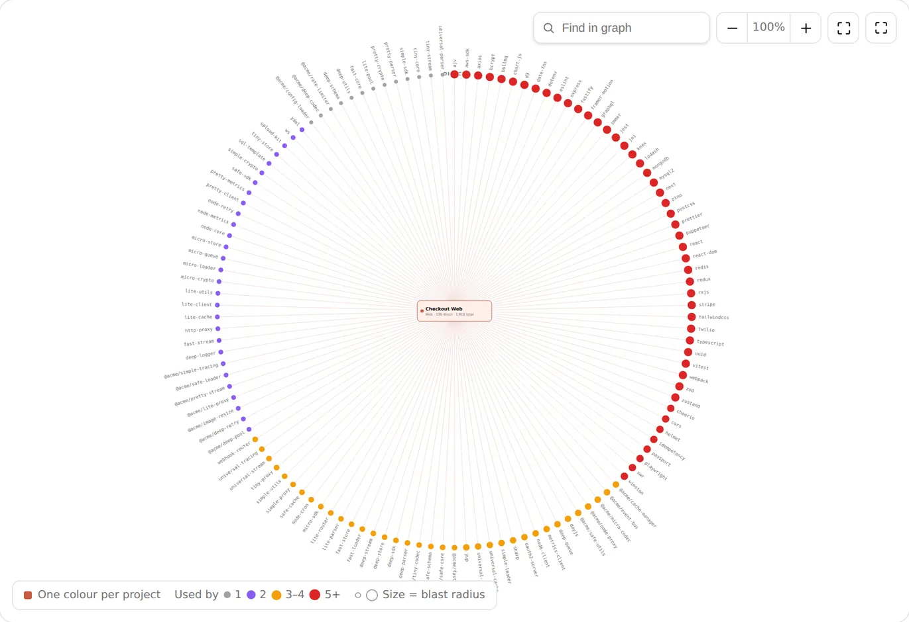
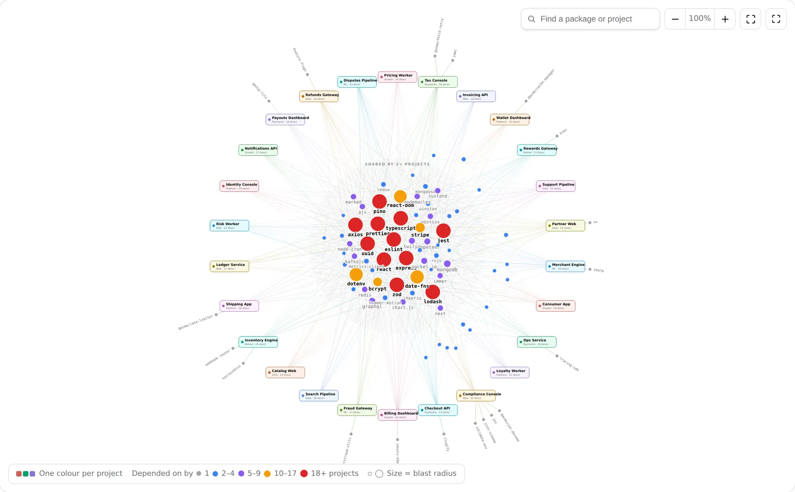
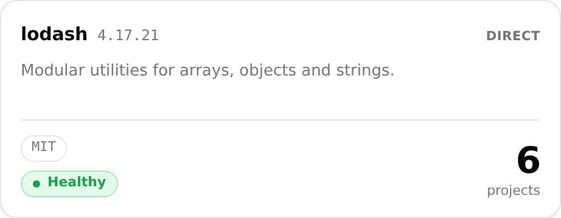
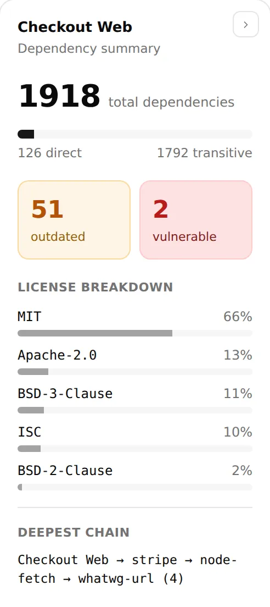
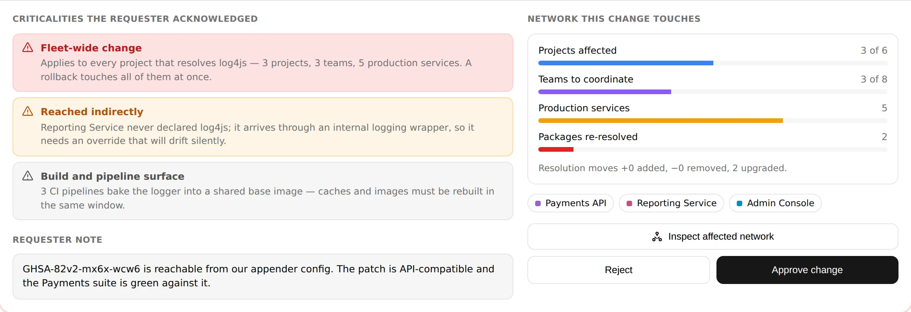
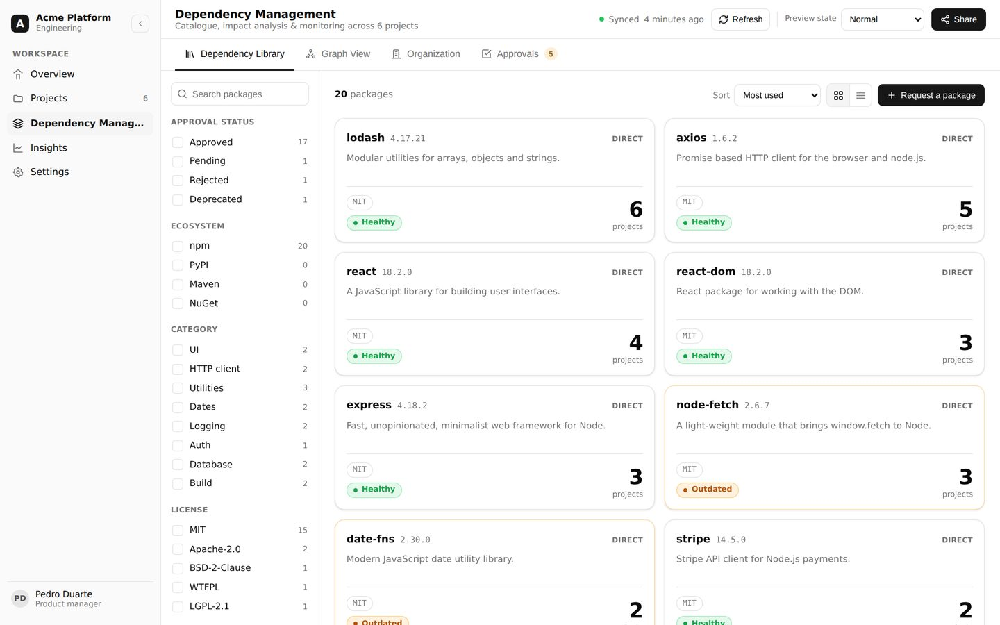

It is deep, not flat
A package can arrive seven levels down through a chain nobody wrote. It is in production, it is unowned, and it does not appear in any manifest a person has ever read.

Case study · 2026 · Product design & DevTools
In brief
Fifty projects, two thousand packages each, a hundred thousand nodes nobody can see. One surface where a product manager can find the vulnerable ones, read every version in use, and approve a change — without opening a lockfile.
00 — Disclosure
Organisation, project and team names are anonymised throughout, and
the people in the avatars are invented. The package inventory is
real open-source software — express,
log4js, lodash, moment
— because the design only holds up if the packages behave like
the ones engineers actually fight with. Final screens are still
being produced; the components below are the real ones, shown on
their own.
01 — What we're designing
A product manager, a tech lead or anyone in senior engineering management should be able to open one screen and see every package every project depends on — and then actually do something from there. Not a report. A working surface.
Everything the organisation currently does across lockfiles, spreadsheets, security emails and approval threads has to collapse into this one tab:
02 — Why it's hard
This would be a straightforward table if the data were small. It is not. The system has to hold several organisations. Each organisation runs 50 or more active projects. Each project resolves around 2,000 packages on average once transitive dependencies are counted.
50+
Projects in a single org
2,000
Packages resolved per project
100k+
Nodes to account for
7
Levels deep, at the worst
So the object being designed for is a graph with six figures of nodes in it, and three properties that make it genuinely nasty:
A package can arrive seven levels down through a chain nobody wrote. It is in production, it is unowned, and it does not appear in any manifest a person has ever read.
The same package appears in dozens of projects, frequently at different versions. The interesting information is never in one project — it is in the comparison between them.
A package that was healthy last week has an advisory this week. Nothing in the codebase changed. The graph is a live thing, not a document.
03 — Need analysis
Before any visual work I sat with the product manager, the chief architect, several engineers and the security side. The goal was not feature requests — it was to find out what question each of them was actually trying to answer, because that determines the shape of the view, not the other way round.
Five distinct needs came out, and every one of them turned into a view:
Needs 01, 02 and 03 are the same graph at three zoom levels. Need 04 is a property painted onto every node in all three. Need 05 is the only one that writes anything back. That grouping became the architecture.
04 — Choosing a visualisation
A dependency tree is a node-link diagram — boxes joined by branching connectors, the shape you get on a whiteboard or in FigJam. That much was obvious. What was not obvious is that no single layout survives the whole range of this data, so the real design work was finding each one's breaking point and switching before it.
Three layouts, one dataset, one switch between them. What follows is each component on its own, before it goes into a screen.
05 — Components
Each of the eight was designed on its own artboard before any of them met on a screen — building in isolation is what kept the visual language consistent once four of them ended up in the same viewport.
What follows is each of them on its own, in the order they were built. None is a drawing: every specimen is the real component, lifted straight out of the running build and framed by itself, so nothing on this page can quietly disagree with the product. Hover one to make it live — change a layout, toggle direction, try to approve a change without acknowledging its findings.

01Project selectorLive
Multi-select, with the consequence attached. The row count is the point — selecting a project is selecting two thousand packages, so the footer totals them as you go. Each selection takes a colour, and that colour is what identifies its edges once several projects share a node in the graph.

02Layout / depth / directionLive
One toolbar drives all three layouts. Layout, depth and direction are separate controls because they answer separate questions — and the direction toggle is the whole product in two words: depends on is the audit, depended on by is the blast radius.

03Layered treeLive
Left to right, one column per hop. Depth becomes horizontal distance, so a chain five columns deep is visibly worse than one that stops at two. The most readable of the three layouts and the first to fail: past roughly a hundred direct dependencies the right-hand column runs off the canvas.

04Radial treeLive
The same tree, bent into a circle. The root returns to the centre and the canvas is spent in every direction instead of one, buying roughly an order of magnitude before it crowds. The trade is real: you can no longer scan a column, so the first ring keeps its labels and the outer ring gives up identity to hover.

05Organisation networkLive
No root, no hierarchy — position is earned. Nodes settle by how many projects pull them, so the packages that would hurt everyone drift to the centre without anyone placing them there. Every shared package is drawn once with one edge per consumer, which is what keeps several hundred links from becoming a hairball.

06Dependency status cardLive
Five states, and colour is spent on nothing else. This badge is the atom the security team asked for: painted onto rows, onto graph nodes, into matrix cells, so a package's condition reads identically wherever you meet it. The sub-line always names the specific reason, never the category.

07Dependency summaryLive
The panel that answers “how bad is it” without a second click. Totals, the direct-versus-transitive split, the two counts anybody acts on, and the deepest chain — the last of which is the only number that predicts how painful an upgrade will be.

08Change requestLive
The only component designed to be slow. Findings are generated from the actual selection, not written by the requester, and the severe ones gate the submit button individually. The approver later sees this same list with the ticks intact — there is no summarising step where the risk quietly evaporates.
06 — The build
The components above, assembled. Not a prototype video and not a screen recording — the front end itself, at full width. Filter the catalogue, sort it, trace what a version bump touches, then open Approvals and try to push a change through without acknowledging what it breaks.
The gate is the part worth poking at. It is the one component in the system deliberately designed to be slow, and the only way to have an opinion about whether that friction is earned is to run into it.

Runs entirely in your browser against fixture data; nothing here talks to a server. Built for a desktop viewport — use Open full screen on a phone.
07 — Where it stands
Five needs, three layouts, one status atom and one gated write path. The thing that made it coherent was refusing to treat the three graph views as three features — they are one dataset at three zoom levels, and the switch between them is a control, not a navigation step.
5
Needs, from four stakeholder groups
3
Layouts, chosen by breaking point
1
Status atom, reused everywhere
3
Gated steps before production moves
Still open. The acknowledgement gate is the load-bearing idea and the most fragile — friction that feels arbitrary gets clicked through within a fortnight. The test I want to run is whether people read the findings or learn the tick positions, and whether computed criticality survives contact with a genuinely urgent security patch that it is slowing down.